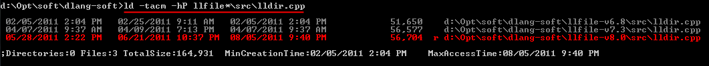
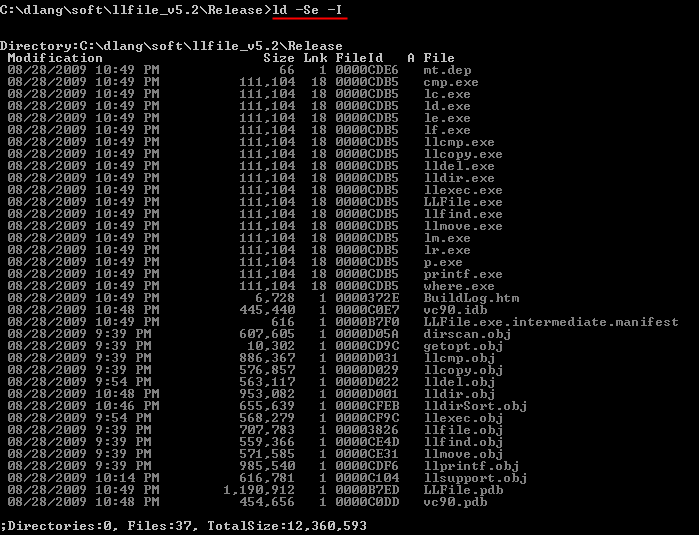
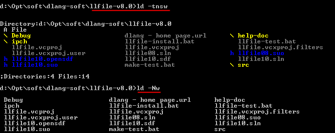
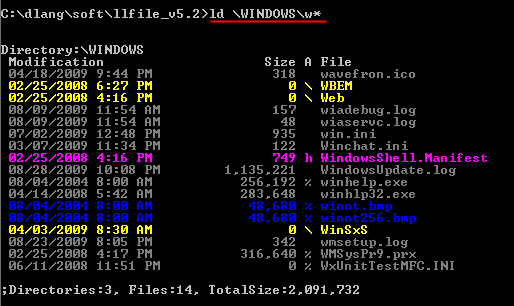
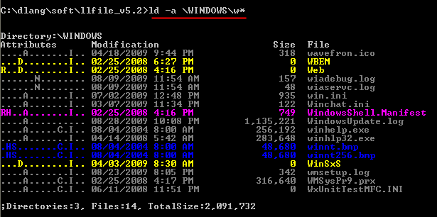
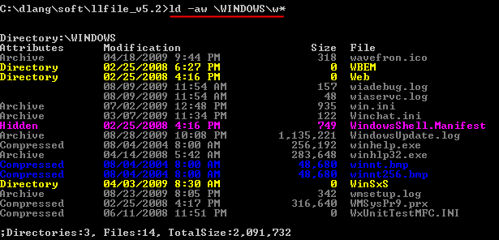
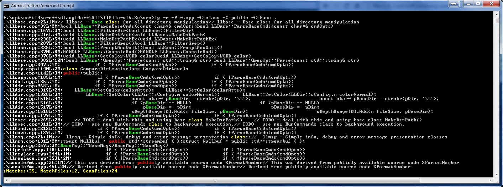

Dennis Lang
Version: 15.3s
Updated: Jun-2015
http://home.comcast.net/~lang.dennis/
- Download v15.3s source code: LLFile-v153-src.zip
- Download v15.3s executable x64 (vs2010): LLFile-x64.exe
- Download v15.3s executable x32 (vs2010): LLFile-x32.exe
- Download v8.3 source code: LLFile-v8.3-src.zip
All of the following features are provided by a single program llfile.exe. This program has several personalities or commands. There are two ways to select a command.
Command Description dir Directory listing copy File copy move File move del File deleletion find/where Find where files are printf Format file and dates exec Execute external command on files compare Binary file compare grep / replace Grep Find and Replace testing Batch file to test most commands
c = copy
d = dir
e = execute
f = find
g = grep
m = move
o = compare
p = print
r = del (remove)
w = whereExample:
llfile -xr *.foo ; remove files matching pattern *.foo
llfile -xd *.foo ; list directory of files matching *.foo
copy llfile.exe lldir.exeWhen you use the specialize executables, their name automatically sets the personality.
copy llfile.exe llcopy.exe
copy llfile.exe llexec.exe
copy llfile.exe lldel.exe
or
fsutil hardlink create lldir.exe llfile.exe
fsutil hardlink create llcopy.exe llfile.exe
fsutil hardlink create llexec.exe llfile.exe
fsutil hardlink create lldel.exe llfile.exe
lldir *.foo ; runs directory commandThe valid specialized executable names are listed below with each commands documentation. For example, lldir can also be ld or d.
lldel *.foo ; runs delete command
The program continues to be an experiment, so no guaranties on reliability and completeness. The copy and move commands are the hardest to use because of how their destination path is defined.
Help Banner:
List Directory v14.0s
Syntax:
<filePattern>
[<directory|pattern> \ ]... <filePattern>
Pattern:
* = zero or more characters
? = any character
Example:
* ; List all filse in current directory
*.obj ; List only files ending in .obj in current directory
-R c:\tmp\*.obj ; List all .obj files in and under c:\tmp directory
c:\t*\src\* ; List all files off directory starting with t
; and having subdirectory src
-a ; Show attributes (-aw show as words, -as show security)
-cw or -cr ; Change permission to writeable or readonly
-ct ; Change time (modify)
-h or -H ; Hide heading
-l ; Long format <attributes> <size> <modify time> <file name>
-r or -R ; Recurse directories
-s ; Hide file size size
-u ; Show disk usage summary (size, count), use instead of -r
-U ; Show disk usage summary (size, count) by extension
-UU or -UUU ; Show disk usage by Name (-UU) or Directory (-UUU)
-w ; Show in wide format
-A=[nrhs] ; Limit files by attribute (n=normal r=readonly, h=hidden, s=system)
-D ; Show only directories
-F ; Show only files
-I ; Show fileId (use with -L)
-L ; Show hard link count and any Alternate Data Streams
-N or -n ; Show just names, same as -h -s -tn -q
-p ; Show full file path
-P=<srcPathPat> ; Optional regular expression pattern on source files full path
-q ; Quiet, dont show stats, no color
-1=<file> ; Redirect output to file
-Q=n ; Quit after 'n' lines output
-S[-][acmnenpst] ; Sort on a=access,c=creation,m=modify time, e=ext, n=name, p=path, s=size or t=type. -=reverse
-t[acm] ; Show Time a=access, c=creation, m=modified, n=none
-T[acm]<op><value> ; Test Time a=access, c=creation, m=modified
; op=(Greater|Less|Equal) Value= now|+/-hours|yyyy:mm:dd:hh:mm:ss
; Value time parts significant from right to left, so mm:ss or hh:mm:ss, etc
; Example -TmcEnow Show if modify or create time Equal to now
; Example -TmG-4.5 Show if modify time Greater than 4.5 hours ago
; Example -TaL04:00:00 Show if access time Less than 4am today
-W[admr] ; Watch directories for any change, options limit wach to
; a=Add, d=Delete, m=Modified, r=renamed, default is any change
-X=<pathPat>,... ; Exclude patterns -X=*.lib,*.obj,*.exe
; No space in patterns. Pattern applied against fullpath
; So *\ma will exclude a directory ma or file ma
-Z<op><value> ; siZe op=(Greater|Less|Equal) value=num<units G|M|K>, ex -Zg100M
-C=<colorOpt> ; Set colors, colors are red,green,blue,intensity, add bg to end of color for background
-C=r<colors> ; readonly ex -C=r+red+blue or -C=r+bluebg
-C=d<colors> ; directory
-C=h<colors> ; hidden file or directory
-, ; Disable commas in size and numeric output
-=<sep> ; Set output field separator string
-# ; Change date format
-? ; Show this help
-?? ; Show extended help
Attributes
Long form Single Char
Left-To-Right Last match wins
---------------- ----------------
READONLY R NORMAL
HIDDEN H NOT_INDEXED I
SYSTEM S ARCHIVE
DIRECTORY D READONLY r
ARCHIVE A HIDDEN h
DEVICE d SYSTEM s
NORMAL N DIRECTORY \
TEMPORARY T DEVICE d
SPARSE_FILE S TEMPORARY t
REPARSE_POINT r SPARSE_FILE S
COMPRESSED C REPARSE_POINT >
OFFLINE O COMPRESSED %
NOT_INDEXED I OFFLINE O
ENCRYPTED E ENCRYPTED E
VIRTUAL V VIRTUAL V
Set defaults by assigning them to the LLDIR environment variable
Use pipe to divide options instead of minus and end with pipe.
Ex: (you must quote string since pipe is a shell character)
; Set hidden file color to pink
set "lldir=Ch+red+blue|"
; Don't show size
set "lldir=s|"
For example, if you want to locate all of the cpp files in all directories which start with the letter d:
C:\dlang\soft\dlang_website\console>ld \dlang\soft\d*\*.cpp Directory:\dlang\soft\dclean Modification Size A File 07/19/2009 8:30 AM 2,163 about.cpp 07/19/2009 8:30 AM 4,309 CustomHintWin.cpp 07/19/2009 8:30 AM 1,192 DClean.cpp 07/19/2009 8:30 AM 7,438 DiskScan.cpp 07/19/2009 8:30 AM 30,697 Main.cpp 07/19/2009 8:30 AM 5,234 options.cpp 07/19/2009 8:38 AM 5,280 RegEnum.cpp 07/19/2009 8:30 AM 3,002 result.cpp 07/19/2009 8:30 AM 1,240 SaveRestore.cpp 07/19/2009 8:30 AM 3,027 structs.cpp 07/19/2009 8:30 AM 13,641 TextPlugInfo.cpp 07/19/2009 8:30 AM 525 wait.cpp Directory:\dlang\soft\dclean_157 Modification Size A File 01/24/2009 1:26 PM 2,163 about.cpp 01/24/2009 1:26 PM 4,309 CustomHintWin.cpp 01/24/2009 1:26 PM 1,192 DClean.cpp 01/24/2009 1:26 PM 7,438 DiskScan.cpp 01/24/2009 1:26 PM 30,697 Main.cpp 01/24/2009 1:26 PM 5,234 options.cpp 01/24/2009 1:26 PM 5,254 RegEnum.cpp 01/24/2009 1:26 PM 3,002 result.cpp 01/24/2009 1:26 PM 1,240 SaveRestore.cpp 01/24/2009 1:26 PM 3,027 structs.cpp 01/24/2009 1:26 PM 13,641 TextPlugInfo.cpp 01/24/2009 1:26 PM 525 wait.cpp Directory:\dlang\soft\ddj_thread_queue Modification Size A File 02/22/2009 3:09 PM 25,620 ring_spin_test.cpp 06/15/2007 8:40 PM 301 stdafx.cpp ;Directories:0, Files:26, TotalSize:181,391Sorting multiple directories sorts the entire set as one. Sorting is selected with -S= followed by a sort criteria. Notice I disabled the 'headings' with -h. Sorting Criteria:
- a = last access time
- c = creation time
- m = modify time
- e = extension (text following last period)
- n = name (includes extension)
- p = path (directories and name)
- s = size
- t = type (directory, file, device)
- - = reverse sort
C:\dlang\soft\dlang_website\console>ld -hS=s \dlang\soft\d*\*.cpp 06/15/2007 8:40 PM 301 stdafx.cpp 01/24/2009 1:26 PM 525 wait.cpp 07/19/2009 8:30 AM 525 wait.cpp 07/19/2009 8:30 AM 1,192 DClean.cpp 01/24/2009 1:26 PM 1,192 DClean.cpp 07/19/2009 8:30 AM 1,240 SaveRestore.cpp 01/24/2009 1:26 PM 1,240 SaveRestore.cpp 07/19/2009 8:30 AM 2,163 about.cpp 01/24/2009 1:26 PM 2,163 about.cpp 07/19/2009 8:30 AM 3,002 result.cpp 01/24/2009 1:26 PM 3,002 result.cpp 07/19/2009 8:30 AM 3,027 structs.cpp 01/24/2009 1:26 PM 3,027 structs.cpp 07/19/2009 8:30 AM 4,309 CustomHintWin.cpp 01/24/2009 1:26 PM 4,309 CustomHintWin.cpp 07/19/2009 8:30 AM 5,234 options.cpp 01/24/2009 1:26 PM 5,234 options.cpp 01/24/2009 1:26 PM 5,254 RegEnum.cpp 07/19/2009 8:38 AM 5,280 RegEnum.cpp 07/19/2009 8:30 AM 7,438 DiskScan.cpp 01/24/2009 1:26 PM 7,438 DiskScan.cpp 07/19/2009 8:30 AM 13,641 TextPlugInfo.cpp 01/24/2009 1:26 PM 13,641 TextPlugInfo.cpp 02/22/2009 3:09 PM 25,620 ring_spin_test.cpp 07/19/2009 8:30 AM 30,697 Main.cpp 01/24/2009 1:26 PM 30,697 Main.cpp ;Directories:0, Files:26, TotalSize:181,391To make the above more useful, you can request full filename path with the -p option.
C:\dlang\soft\dlang_website\console>ld -hpS=s \dlang\soft\d*\*.cpp 06/15/2007 8:40 PM 301 \dlang\soft\ddj_thread_queue\stdafx.cpp 01/24/2009 1:26 PM 525 \dlang\soft\dclean_157\wait.cpp 07/19/2009 8:30 AM 525 \dlang\soft\dclean\wait.cpp 07/19/2009 8:30 AM 1,192 \dlang\soft\dclean\DClean.cpp 01/24/2009 1:26 PM 1,192 \dlang\soft\dclean_157\DClean.cpp 07/19/2009 8:30 AM 1,240 \dlang\soft\dclean\SaveRestore.cpp 01/24/2009 1:26 PM 1,240 \dlang\soft\dclean_157\SaveRestore.cpp 07/19/2009 8:30 AM 2,163 \dlang\soft\dclean\about.cpp 01/24/2009 1:26 PM 2,163 \dlang\soft\dclean_157\about.cpp 07/19/2009 8:30 AM 3,002 \dlang\soft\dclean\result.cpp 01/24/2009 1:26 PM 3,002 \dlang\soft\dclean_157\result.cpp 07/19/2009 8:30 AM 3,027 \dlang\soft\dclean\structs.cpp 01/24/2009 1:26 PM 3,027 \dlang\soft\dclean_157\structs.cpp 07/19/2009 8:30 AM 4,309 \dlang\soft\dclean\CustomHintWin.cpp 01/24/2009 1:26 PM 4,309 \dlang\soft\dclean_157\CustomHintWin.cpp 07/19/2009 8:30 AM 5,234 \dlang\soft\dclean\options.cpp 01/24/2009 1:26 PM 5,234 \dlang\soft\dclean_157\options.cpp 01/24/2009 1:26 PM 5,254 \dlang\soft\dclean_157\RegEnum.cpp 07/19/2009 8:38 AM 5,280 \dlang\soft\dclean\RegEnum.cpp 07/19/2009 8:30 AM 7,438 \dlang\soft\dclean\DiskScan.cpp 01/24/2009 1:26 PM 7,438 \dlang\soft\dclean_157\DiskScan.cpp 07/19/2009 8:30 AM 13,641 \dlang\soft\dclean\TextPlugInfo.cpp 01/24/2009 1:26 PM 13,641 \dlang\soft\dclean_157\TextPlugInfo.cpp 02/22/2009 3:09 PM 25,620 \dlang\soft\ddj_thread_queue\ring_spin_test.cpp 07/19/2009 8:30 AM 30,697 \dlang\soft\dclean\Main.cpp 01/24/2009 1:26 PM 30,697 \dlang\soft\dclean_157\Main.cpp ;Directories:0, Files:26, TotalSize:181,391
Example of Color and Softlink (redirection)
Single Char Last Match wins Normal Not Indexed I Archive Readonly r Hidden h System s Directory \ Device d Temporary t Sparse file S Reparse point > Compressed % Offline O Encrypted E Virtual V
Example of Creation, Access and Modification Dates

Example showing hardlink count and id

Example of Wide Listing
Most switches toggle their state. Hide the file size by using -s. Use -h to disable heading and -tn to set the Time to None. Notice that the switches can be concatenated together to form -shtn. As of version 14, most switches which have arguments require an equal sign to prevent incorrect parsing of long strings of commands.
Example -S=s -F=*.exe,*.bat -X=a*.
The following three images show three ways to display file attributes/types.
1. Attributes shown as single character

2. Attributes shown as full array of characters

3. Significant Attributes shown as Word

Help Banner:
Copy v14.0s
Syntax:
[<switches>] <fromPattern>... <toPattern>
Destination controls:
-cw or -cr ; Change destination permission to writeable or readonly
-f ; Force copy even if destination is set to read only
-n ; No copy, just echo command
-o ; Only copy if destination is older than source (modify time)
-O ; Okay to over write existing destination regardless of time
-p ; Prompt before copy
-pp ; Prevent prompt on Override or readonly, just skip file
-P=<srcPathPat> ; Optional regular expression pattern on source files
-z ; Un/Compress (compressed file ends in .lzo)
Source selection:
-A=[nrhs] ; Limit files by attribute (n=normal r=readonly, h=hidden, s=system)
-D ; Copy directory tree if destination does not exist
-r ; Recurse starting at from directory, matching file pattern
-I=<file> ; Read list of files from <file> or - for stdin
-F=<filePat>,... ; Limit to matching file patterns
-X=<pathPat>,... ; Exclude patterns -X=*.lib,*.obj,*.exe
; No space in patterns. Pattern applied against fullpath
; So *\ma will exclude a directory ma or file ma
-Z<op><value> ; siZe op=(Greater|Less|Equal) value=num<units G|M|K>, ex -Zg100M
Misc options:
-B=c ; Add additional field separators to use with #n selection
-q ; Quiet, don't echo command (echo on by default)
-1=<output> ; Redirect output to file
Where fromPattern is:
<file|Pattern>
[<directory|pattern> \]... <file|Pattern|#n>
Pattern:
* = zero or more characters
? = any character
Destination Pattern:
*n = Replace destination with source filename wildcard 'n', 1 is first
Ex: lc *\file-*-.* file.*1
#n = replace destination with source directory 'n'
where n is subdirectories n=1 first from left
-n counts from right
#l = where 'l' is a letter:
b = base name
e = extension
n = base.ext
l, u, c = lower, upper, captialize name for later use
Example:
lc * e:\tmp\
lc *.obj e:\tmp\
lc -R c:\tmp\*.obj d:\tmp\*.obj e:\tmp\
lc c:\t*\src\* e:\tmp\
; Use # to select subdirectories or parts of source path name. Also to convert case.
; When any # appear in line, use #n, #b, #e to specify target filename
lc c:\foo\bar\*\*.DAT d:\far\#-1\#l#n
lc c:\foo\bar\*.dat d:\far\#b.tmp ; change extension .dat to .tmp
; Remove underscores from files
lc -B_ c:\*_*_*.dat d:\*1*2*3.dat
; Copy full recursive directory
lc -r srcDir backup\* ; Note * is important in destination to force dir creation
; Copy just dat files
lc -r srcDir\*.dat backup\*
; Copy and compress files
lc -rz \*.dat compressed\*
; Uncompress files
lc -rz compressed\*.lzo srcDir\*
Help Banner:
Move v14.0s
Syntax:
[<switches>] <fromPattern>... <toPattern>
Where switches are:
-A=[nrhs] ; Limit files by attribute (n=normal r=readonly, h=hidden, s=system)
-cw or -cr ; Change destination permission to writeable or readonly
-f ; Force move even if destination is set to read only
-I=<file> ; Read list of files from <file> or - for stdin
-n ; No move, just echo command
-o ; Only move if destination is older than source (modify time)
-O ; Okay to over write existing destination regardless of time
-r ; Recurse starting at from directory, matching file pattern
-p ; Prompt before move
-pp ; Prevent prompt on Override or readonly, just skip file
-P=<srcPathPat> ; Optional regular expression pattern on source files full path
-q ; Quiet, don't echo command (echo on by default)
-B=c ; Add additional field separators to use with #n selectoin
-D ; Only move directories
-F ; Only move files
-F=<filePat>,... ; Limit to matching file patterns
-L ; Create hard link instead of copy
-X=<pathPat>,... ; Exclude patterns -X=*.lib,*.obj,*.exe
; No space in patterns. Pattern applied against fullpath
; So *\ma will exclude a directory ma or file ma
-Z<op><value> ; siZe op=(Greater|Less|Equal) value=num<units G|M|K>, ex -Zg100M
-? ; Show this help
Where fromPattern is:
<file|Pattern>
[<directory|pattern> \]... <file|Pattern|#n>
Pattern:
* = zero or more characters
? = any character
Destination Pattern:
*n = Replace destination with source filename wildcard 'n', 1 is first
Ex: lm *\file-*-.* file.*1
#n = Replace destination with source directory 'n'
where n is subdirectories n=1 first from left
or -n counts from right
#<arg> = where <arg> is a letter
f = fullpath
d = directory
b = base name
e = extension
n = base.ext
l, u, c = lower, upper, captialize name for later use
Example:
* e:\tmp\
*.obj e:\tmp\
-R c:\tmp\*.obj d:\tmp\*.obj e:\tmp\
c:\t*\src\* e:\tmp\
; use # to select subdirectories and force name (#n) to lowercase (#l)
; when any # appear in line, use #n, #b, #e to specify target filename
c:\foo\bar\*\*.DAT d:\far\#-1\#l#n
c:\foo\bar\*.dat d:\far\#b.tmp ; change extension .dat to .tmp
; remove underscores from files
c:\*_*_*.dat d:\*1*2*3.dat
; Read files from stdin
ld -N | grep Foo | lm -i=- .\backup\#n
Help Banner:
Delete v14.0s
Syntax:
[<switches>] <Pattern>...
Where switches are:
-A=[nrhs] ; Limit files by attribute (n=normal r=readonly, h=hidden, s=system)
-D ; Del directories only
-F ; Del files only
-F=<filePat>,... ; Limit to matching file patterns
-f ; Force delete even if destination is set to read only
-I=<infile> ; Read filenames from infile or stdin if -
-j ; Follow junctions (default: skip junctions)
-n ; No delete, just echo command
-p ; Prompt before delete
-q ; Quiet, don't echo command (echo on by default)
-r ; Recurse starting at from directory, matching file pattern
-s ; show file size size
-t[acm] ; show Time a=access, c=creation, m=modified, n=none
-u ; Enable undo, delete files and directories by moving to recycle bin
-P=<srcPathPat> ; Optional regular expression pattern on source files full path
-Q=n ; Quit after 'n' retries if error
-T[acm]<op><value> ; Test Time a=access, c=creation, m=modified
; op=(Greater|Less|Equal) Value= now|+/-hours|yyyy:mm:dd:hh:mm:ss
; Value time parts significant from right to left, so mm:ss or hh:mm:ss, etc
; Example -TmcEnow Show if modify or create time Equal to now
; Example -TmG-4.5 Show if modify time Greater than 4.5 hours ago
; Example -TaL04:00:00 Show if access time Less than 4am today
-X=<pathPat>,... ; Exclude patterns -X=*.lib,*.obj,*.exe
; No space in patterns. Pattern applied against fullpath
; So *\ma will exclude a directory ma or file ma
-Z<op><value> ; siZe op=(Greater|Less|Equal) value=num<units G|M|K>, ex -Zg100M
-1=<output> ; Redirect output to file
-? ; Show this help
Where fromPattern is:
<file|Pattern>
[<directory|pattern> \]... <file|Pattern|#n>
Note - remember to end directory with \ as in
-rfq .\foo-*\ ; Recursively, forcefully quietly remove all files
; and directories which start in a directory that
; starts with foo-
-rfq .\foo-* ; Similar but search ALL directories at current level
; for files or directories which start with foo-
Pattern:
* = zero or more characters
? = any character
Help Banner:
Find v14.0s
Find a file along directory path or env paths
Syntax:
[<switches>] <Pattern>...
Where switches are:
-? ; Show this help
-A=[nrhs] ; Limit files by attribute (n=normal r=readonly, h=hidden, s=system)
-D ; Only directories in matching, default is all types
-p ; Search PATH environment directories for pattern
-e=<envName>[,...] ; Search env environment directories for pattern
-F ; Only files in matching, default is all types
-F=<filePat>,... ; Limit to matching file patterns
-I=<file> ; Read list of files from this file
-p ; Short cut for -e=PATH, search path
-P=<srcPathPat> ; Optional regular expression pattern on source files full path
-q ; Quiet, default is echo command
-Q=n ; Quit after 'n' matches
-s ; Show file size size
-t[acm] ; Show Time a=access, c=creation, m=modified, n=none
-X=<pathPat>,... ; Exclude patterns -X=*.lib,*.obj,*.exe
; No space in patterns. Pattern applied against fullpath
; So *\ma will exclude a directory ma or file ma
-V ; Verbose
-E=[cFDdsa] ; Return exit code, c=file+dir count, F=file count, D=dir Count
; d=depth, s=size, a=age
-r ; Don't recurse into subdirectories
-1=<file> ; Redirect output to file
Where Pattern is:
<file|Pattern>
[<directory|pattern> \]... <file|Pattern|#n>
Pattern:
* = zero or more characters
? = any character
Example:
; Assuming lf.exe and where.exe are linked to llfile.exe
; Example to find where an executable is in current search PATH
llfile -xw cmd.exe ; -xw force where command
lf -p cmd.exe ; -p enables PATH search
where cmd.exe ; where command auto adds '-e'
lf -Ar -i=c:\fileList.txt >nul ; check for non-readonly files from list
lf -e=LIB libfoo.lib ; search env LIB's path for libfoo.lib
lf -F=*.exe,*.com,*.bat .\* ; search for executables or batch files
lf -F -X=*.obj,*.exe build\* ; search for none object or exe files
Help Banner:
Printf v14.0s
Print format
Syntax:
[<switches>]
Where switches are:
-I=<inFile> ; Read input from file or stdin if -
; NOTE: -I must be after the -a options
; Example to convert to uppercase
; echo foo | p -a=pn -I=- -p=%s,%s
-i=<text> ; Parse text per separator and send to formatter
; NOTE: -a must be before -i to control case
; ex: -a=nuncn -i=Hello -p=%s,%s,%s
-Bc ; Field separator (see -e example below)
-C=<colorOpt> ; Set colors, colors are red,green,blue,intensity, add bg to end of color for background
; ex -C=red+blue or -C=green,redbg+bluebg
-D ; Only directories
-F[=<filePat>] ; Only files
-a=[pdn...] ; File arguments passed to printf
; p=full path
; d=directory
; n=name
; r=name root (no extension)
; e=extension (right of last .)
; s=size (as a string)
; _=defcase
; l=lowercase
; u=uppercase
; c=captialize
; NOTE: -a must proceed -i or -I
-p=<fmt> ; Printf format, use any valid %s format, %20s
; input is either from redirection -i-
; or input is from a file -i<filename>
; or input is from file directory scan (trailing arguments)
; Use quotes to include spaces in format
; or a string string as in "-pHello World\n"
-P=<srcPathPat> ; Regular expression pattern on source files path or env items
-s=<fmt> ; Scan input with regex
-l=<timeFmt> ; strftime format using local time
-z=<timeFmt> ; strftime format using zTime
-q ; Quiet, default is echo command
-Q=n ; Quit after 'n' matches
-X=<pattern> ; Exclude patterns -X *.lib,*.obj,*.exe
-1 ; Don't recurse into subdirectories
Note:
Remember to escape % if used in a batch file with two %%
Examples:
; Use -a to place two copies of filename as argument to printf
p -a=nn "-p=p4 move support\\%s radar\\%s\n" radar\*
; Generate string to copy file to .bak extension, save in batch file
p -a=nr "-p=copy %s %s.bak" *.tax > job.bat
; set -p to define printf before -i which specifies the input followed by scan using regex
dir | p "-p=%.0syear=%s mon=%s day=%s\n" -I=- "-s=([0-9]*)/([0-9]*)/([0-9]*).*"
; set -p after -I to print contents of input
dir | p -I=- -p=Files=%s\n\n
p -I=foo.txt "-p=Stuff %s %s Stuff\n"
; List environment variable path, split on semicolon
-e=PATH "-p=%s\n"
-e=PATH "-p=%4# %s\n" ; Number env path directories
-P=Program -e=* -p%s\n ; Show env's which contain word Program
-e=PATH "-p=%s" *.txt ; Scan paths for *.txt
"-l=Date is %m/%d/%y %H:%M:%S" ; local time
"-l=Date is %m/%d/%y" "-p=\n" "-l=%H:%M:%S" ; local time
strftime:
%a Abbreviated weekday name
%A Full weekday name
%b Abbreviated month name
%B Full month name
%c Date and time representation appropriate for locale
%d Day of month as decimal number (01 û 31)
%H Hour in 24-hour format (00 û 23)
%I Hour in 12-hour format (01 û 12)
%j Day of year as decimal number (001 û 366)
%m Month as decimal number (01 û 12)
%M Minute as decimal number (00 û 59)
%p Current locale's A.M./P.M. indicator for 12-hour clock
%S Second as decimal number (00 û 59)
%U Week of year as decimal number, with Sunday as first day of week (00 û 53)
%w Weekday as decimal number (0 û 6; Sunday is 0)
%W Week of year as decimal number, with Monday as first day of week (00 û 53)
%x Date representation for current locale
%X Time representation for current locale
%y Year without century, as decimal number (00 û 99)
%Y Year with century, as decimal number
%z, %Z Either the time-zone name or time zone abbreviation
%% Percent sign
Help Banner:
Compare Two Files v14.0s
Do binary comparison of files. When processing a list of files only those
with matching base name are compared against each other.
Syntax:
<filePattern> <filePattern>
Pattern:
* = zero or more characters
? = any character
Example:
LLCmp d1\* ; Compare similar files in one directory
LLCmp d1\* d2\* d3\* ; Compare similar files in three directories
LLCmp d1\*.cpp d2\*.cpp ; Compare similar files ending in .cpp
LLCmp -r d1 d2 ; Compare all similar files in two directory trees
LLCmp c:\t*\src\*.cpp master.cpp ; Compare files to a single file
; and having subdirectory src
LLCmp -o20 -v new.data old.data ;Use offset to skip over date changes
Output controls:
-a ; Show ALL match result (default is only differences)
-e ; Show only equal files
-s ; Show skipped files (default is only differences)
-s=l or -s=r ; Show skipped Left or Right files
-v ; Verbose, show detail on first difference per file
-V=<count> ; Verbose, show differences, stop after 'count' per file
-w=<width> ; Compare filesize numeric width, default 12
-P ; Hide compress progress
-q ; quiet, dont show detail, just set exit status 0=match, 1=differ
-qq ; Hide details and only show summary when used with -F
-Q=n ; Quit after 'n' lines output
-1=<output> ; Redirect output to file
-, ; Disable commas in size and numeric output
File selection:
-A=[nrhs] ; Limit files by attribute (n=normal r=readonly, h=hidden, s=system)
-D ; Force subdirectories and name to match before comparing
-F ; Match just the filename, size and date and not its contents
-I=<infile> ; Read filenames from infile or stdin if -
-r ; Recurse directories
-l=<levels> ; Directory levels to include in path matching, default is 1
-o=<offset> ; Start binary file compare at file offset, default is 0
-X=<pathPat>,... ; Exclude patterns -X=*.lib,*.obj,*.exe
; No space in patterns. Pattern applied against fullpath
; So *\ma will exclude a directory ma or file ma
-Z=<op><value> ; siZe op=(Greater|Less|Equal) value=num<units G|M|K>, ex -Zg100M
Special actions:
-d=e | -d=n ; Delete matching (-d=e) or not matching files (-d=n)
-n ; Don't execute delete, just show command delete command
Exit value (%ERRORLEVEL%):
-E=e ; return #equal
-E=d ; return #diff
-E=dlr ; return diff + left + right
Help Banner:
Execute v14.0s
Syntax:
[<switches>] -c "command" <Pattern>...
Where switches are:
-? ; Show this help
-A=[nrhs] ; Limit files by attribute (n=normal r=readonly, h=hidden, s=system)
-B=c ; Add additional field separators to use with #n selectoin
-D ; Only process directories
-F ; Only process files
-F=<filePat>,... ; Limit to matching file patterns
-f ; Force to execute on read-only files
-g <grepPattern> ; Execute only if file contains grepPattern
-G <grepRange> ; default is entire file, +n=first n lines, -n=last n lines
-I=<file> ; Read list of files from <file> or - for stdin
-n ; No execution
-p ; prompt before executing command
-P=<srcPathPat> ; Optional regular expression pattern on source files full path
-q ; Quiet, default is echo command
-Q ; Quote argument before executing
-r ; Recurse into subdirectories
-X=<pathPat>,... ; Exclude patterns -X=*.lib,*.obj,*.exe
; No space in patterns. Pattern applied against fullpath
; So *\ma will exclude a directory ma or file ma
-V ; verbose mode
-Z<op><value> ; siZe op=(Greater|Less|Equal) value=num<units G|M|K>, ex -Zg100M
Last argument:
-C=<count> ; Number of files to append to command, default is 1
-c=<command> ; Execute command, default with file name append to command
; Use #<arg> to select parts of filename
WARNING: Remember to quote command if it has spaces.
Also \" at the end of quoted command will not work, added another slash.
llexec -c "command arg1 \arg2 \arg3\\" *.dat
Example to copy files and prefix destination name with save-
llexec -F "-c=xcopy #q#f#q #qsave-#n#q"
Example to prompt to set readonly attributes using attrib command
llexec -p "-c=attrib +r "
Example to change directory and execute command
llecec -D "-c=cmd /c cd #d && p4 edit *" .\*\
#<arg> = where <arg> is a letter
d = directory
f = fullname include directories
b = base name
e = extension
n = base.ext
l, u, c = lower, upper, captialize name for later use
q adds a quote
Where Pattern is:
<file|Pattern>
[<directory|pattern> \]... <file|Pattern|#n>
Pattern:
* = zero or more characters
? = any character
Help Banner:
Replace v15.3s
Replace a file[s] data
Syntax:
[<switches>] <Pattern>...
Where switches are:
-? ; Show this help
-A=[nrhs] ; Limit files by attribute (n=normal r=readonly, h=hidden, s=system)
-D ; Only directories in matching, default is all types
-p ; Search PATH environment directories for pattern
-e=<envName>[,...] ; Search env environment directories for pattern
-F ; Only files in matching, default is all types
-F=<filePat>,... ; Limit to matching file patterns
-G=<grepPattern> ; Find only if file contains grepPattern
-g=<grepOptions> ; Use with -G
; Default is search entire file
; Ln=first n lines
; Mn=first n matches
; H(f|l|m|t) Hide filename|Line#|MatchCnt|Text
; I=ignore case
; Bn=show before n lines
; An=show after n lines
; F(l|f) force byLine or byFile
; U(i|b) update inline or backup
-I=<file> ; Read list of files from this file
-p ; Short cut for -e=PATH, search path
-P=<srcPathPat> ; Optional regular expression pattern on source files full path
-q ; Quiet, default is echo command
-Q=n ; Quit after 'n' file matches
-r ; Recurse into subdirectories
-R=<replacePattern> ; Use with -G to find and replace
-s ; Show file size size
-t[acm] ; Show Time a=access, c=creation, m=modified, n=none
-X=<pathPat>,... ; Exclude patterns -X=*.lib,*.obj,*.exe
; No space in patterns. Pattern applied against fullpath
; So *\ma will exclude a directory ma or file ma
-V ; Verbose
-E=[cFDdsamL] ; Return exit code, c=file+dir count, F=file count, D=dir Count
; d=depth, s=size, a=age, m=#matches, L=list of matching files
-1=<file> ; Redirect output to file
Where Pattern is:
<file|Pattern>
[<directory|pattern> \]... <file|Pattern|#n>
Pattern:
* = zero or more characters
? = any character
Example:
llfile -xG -G=(H|h)ello\r\n *.txt ; -xG force grep command
lg "-G=String" -g=I -r -F=*.cpp src ; Ignore case String in cpp files
lg -Ar -i=c:\fileList.txt >nul ; check for non-readonly files from list
lg -F=*.txt,*.log '-G=[0-9]+' .\* ; search files for numbers
lg -X=*.obj,*.exe -G=foo build\* ; search none object or exe files
lg "-G= foo " *.txt | lg -G=bar ; Same as following
lg "-G= foo " -G=bar *.txt ; two -G, either can match per line
; Use -E=L to match multiple words in same file but not same line
lg -G=foo -r -F=*.txt -E=L | lg -I=- -G=bar
lg "-G='([^']+)',.*" "-R='$1');" foo.txt ; Grep and Replace

@rem @rem Test llfile @rem @echo off @if EXIST testDir rmdir /s /q testDir @mkdir testDir copy Release\llfile.exe testDir\ @pushd testDir @rem Install llfile -xi >nul if not ERRORLEVEL 26 ( echo "Install failed, exitcode %ERRORLEVEL%" goto END ) @echo on @prompt $g$s @set heading="\n=========================(%%s)=========================\n\n" @cls @p "-i=Show various colored text" "-p=%heading%" p -C=red,whiteBg "-p= red " -C=green,whiteBg "-p=green " -C=blue,whiteBg "-p=blue on white\n" p -C=red,blackBg "-p= red " -C=green,blackBg "-p=green " -C=blue,blackBg "-p=blue on black\n" p -C=green+red,redBg "-p= yellow on red\n" p -C=black,whiteBg "-p= black on white\n" @p -p=\n\n @pause @cls @p "-i=Show time/date text" "-p=%heading%" p -C=black,whiteBg "-l=DOS Date and Time %%a %%x %%X " "-z=Gmt= %%x %%X" (date/t & time/t) | p -C=black,whiteBg -I=- "-p=DOS Date and Time %%s %%s\n" @p -p=\n\n @pause @cls @p "-i=Show Path environment variable" "-p=%heading%" p -e=PATH "-p=\t%%s\n" @p "-p=\n\nNumbered and limited to those with Program in their name\n" p -e=PATH -P=Program "-p=\t%%4# %%s\n" @p -p=\n\n @pause cls @p "-i=Search Path environment variable for p*.exe" "-p=%heading%" p -e=PATH "-p=%%4# %%s\n" p*.exe @p -p=\n\n @pause @cls @p "-i=Compare Directory listing" "-p=%heading%" mkdir txt ld -Sn > txt\ld1.txt dir /On > txt\dir1.txt fc /w txt\ld1.txt txt\dir1.txt @p "-p=\n--(%ERRORLEVEL%)-- Default Directory Comparison results (mostly equal) " @pause @cls @p "-i=Compare Sorted Directory listing" "-p=%heading%" ld -n -Sn -1=txt\ld2.txt dir /On /b > txt\dir2.txt fc /w txt\ld2.txt txt\dir2.txt @p "-p=\n--(%ERRORLEVEL%)-- Directory Name comparison results (100% equal) " @pause @cls @p "-i=Compare Sorted Directory listing" "-p=%heading%" ld -ct lm.exe ld -S-m -tm > txt\ld3.log dir /tw /o-d /O-n > txt\dir3.log fc /w txt\ld3.log txt\dir3.log @p "-p=\n-- Directory Name comparison results (mostly equal) " @pause @cls @p "-i=Sorted Directory various ways" "-p=%heading%" @p "-p=---Sort by Extension:\n" ld -Se txt @p "-p=\n\n---Sort by reverse Extension:\n" ld -S-e txt @pause @cls @p "-p=\n\n---Sort by Name:\n" ld -Sn txt @p "-p=\n\n---Sort by reverseName:\n" ld -S-n txt @pause @cls @p "-p=\n\n---Sort by Size:\n" ld -Ss txt @p "-p=\n\n---Sort by reverse Size:\n" ld -S-s txt @pause @cls @p "-p=\n\n---Sort by Creation Time:\n" ld -Sc -tc txt @p "-p=\n\n---Sort by Modification Time:\n" ld -Sm -tm txt @pause @cls @p "-i=File Copy and Compare" "-p=%heading%" lc -q * dst1\* lc -q * dst1\sub1\* xcopy * dst2\* >nul xcopy * dst2\sub1\* >nul cmp dst1\sub1\* dst2\sub1\* @p "-p=\n--(%ERRORLEVEL%)-- Copy and Compare results (100% equal) " @pause @cls @p "-i=File Copy l* and Compare" "-p=%heading%" lc l* dst1\sub2\*1 @p "-p=\n\n---(%ERRORLEVEL%) copy l*" cmp -aF dst1\sub2\* dst1\sub1\* @p "-p=\n--(%ERRORLEVEL%)-- Copy subset and Compare results " @pause @cls @p "-i=Directory usage report" "-p=%heading%" ld -u dst1\sub1 dst2\sub1 @p -p=\n\n @pause :TIMEOP @cls @p "-i=Set file times" "-p=%heading%" @mkdir timeMod @echo > timeMod\now @echo > timeMod\yesterday @echo > timeMod\prevHour @echo > timeMod\nextHour @echo > timeMod\tomorrow ld -ct=now timeMod\now ld -ct=-1d timeMod\yesterday ld -ct=-1h timeMod\prevhour ld -ct=+1h timeMod\nexthour ld -ct=+1d timeMod\tomorrow ld -tm timeMod\* @p -p=\n\n @pause @cls @p "-i=Test file times" "-p=%heading%" @p "-p=\n----Show Modified time of now (may miss if minute just rolled over) ----\n" ld -tm -T=mEnow timeMod\* @p "-p=\n----Show Greater than now, two files nexthour and tomorrow and maybe now----\n" ld -tm -T=mGnow timeMod\* @p "-p=\n----Show Less than now, two files prevHour, yesterday ----\n" ld -tm -T=mLnow timeMod\* @p "-p=\n----Show Less than -30 minutes, two files prevHour, yesterday ----\n" ld -tm -T=mL-30m timeMod\* @p "-p=\n----Show Less than -2 hours, one file yesterday ----\n" ld -tm -T=mL-2h timeMod\* @p "-p=\n----Show Greater than -2 hours, four files prevHour, nextHour, now, tomorrow ----\n" ld -tm -T=mG-2h timeMod\* @p "-p=\n----Show Greater than Jan 1st, 2013, five files ---\n" ld -tm -T=mG2013:01:01:00:00:00 timeMod\* @p "-p=\n----Show Less than Dec 31st, 2013, five files ---\n" ld -tm -T=mL2013:12:31:12:30:59 timeMod\* @p -p=\n\n @pause @cls lf -F=now,prevHour,nextHour -tm -s @p "-p=\n--(%ERRORLEVEL%)-- Find files, default return dir+file count:3 " lf -E=s -F=now,prevHour,nextHour -s @p "-p=\n--(%ERRORLEVEL%)-- Find files, return total found file sizes:39 " lf -E=f -F=now,prevHour,nextHour -tm @p "-p=\n--(%ERRORLEVEL%)-- Find files, return total #files:3 " @w ld.exe @cls @p "-i=Execute attrib command" "-p=%heading%" ld -n p* | lf -I=- | le -I=- -c="attrib +R " ld -n p* | lf -I=- | ld -I=- @p -p=\n\n @pause @cls @p "-i=Move command" "-p=%heading%" lm dst1\* new1\* @p -p=\n\n @pause @cls @p "-i=Move command" "-p=%heading%" lm -r dst2\* new1\* @p -p=\n\n @pause @cls @p "-i=Move command" "-p=%heading%" lm -rO dst2\* new1\* @p -p=\n\n @pause goto END @cls @p "-i=Delete Duplicate files" "-p=%heading%" cmp -d=e dst1\* dst2\* @p "-p=\n--(%ERRORLEVEL%)-- compare and delete equal " @pause @cls @p "-i=Delete Dir (fail on subdirs)" "-p=%heading%" lr dst1\ @p "-p=\n--(%ERRORLEVEL%)-- Delete files, fail on subdirectories " @pause @cls @p "-i=Delete Dir and subdirs" "-p=%heading%" lr -r dst1\ @p "-p=\n--(%ERRORLEVEL%)-- Delete files and subdirectories " @pause :END @popd @prompt $p$g